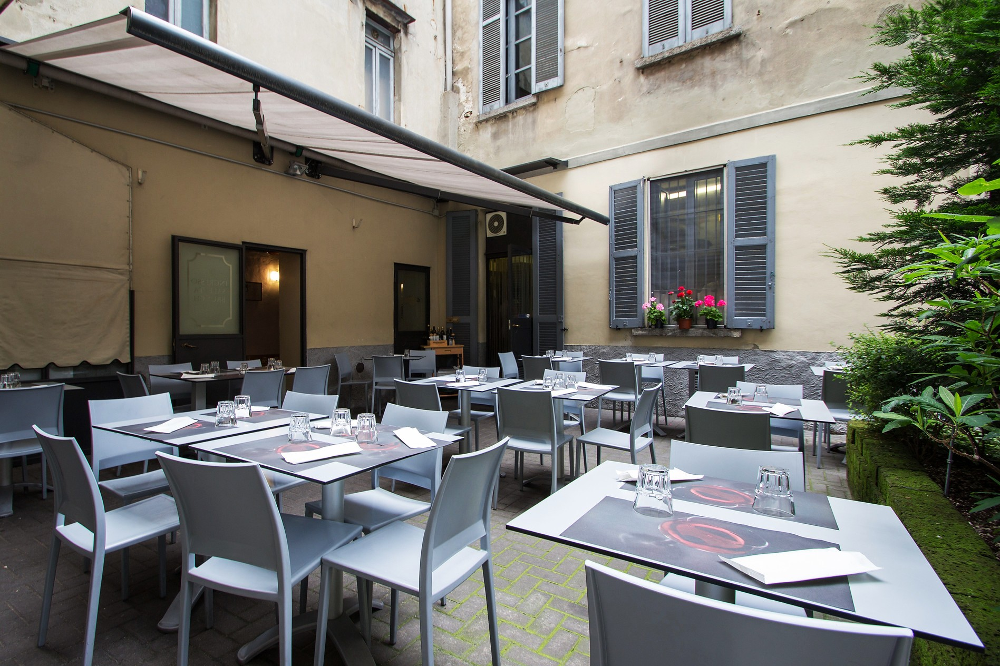
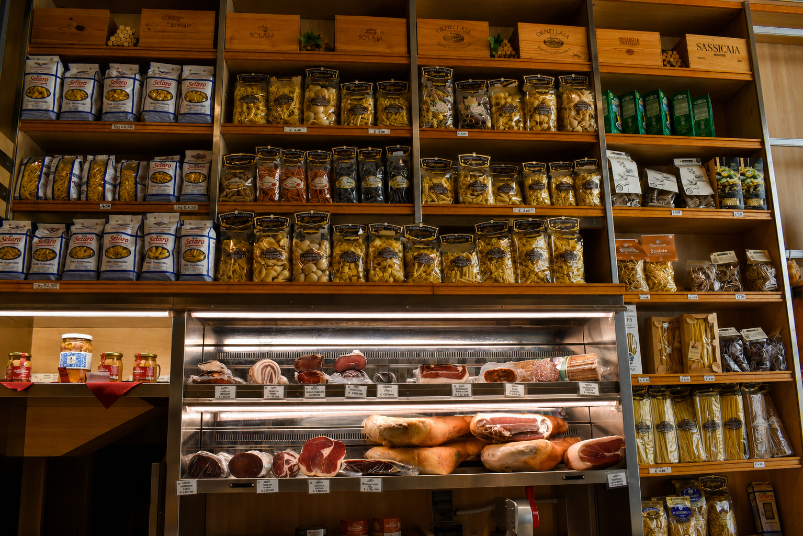

Benvenuti
Benvenuti alla Gastronomia Castiglioni,
un punto di riferimento nel cuore di Como
dove tradizione, qualità e passione
per la buona cucina si incontrano ogni giorno.
Selezioniamo con cura prodotti gastronomici,
vini e specialità italiane offrendo
un’esperienza fatta di gusto,
accoglienza e convivialità.
Ristorante

Il Ristorante Castiglioni offre una cucina semplice,
autentica e preparata ogni giorno
con ingredienti selezionati.
Il servizio è disponibile esclusivamente a pranzo,
in un ambiente accogliente e familiare.
Il locale dispone di un cortile esterno ideale
durante la bella stagione e di salette interne
per pranzi tranquilli e momenti conviviali.
Menù del Giorno
Il nostro menù viene aggiornato quotidianamente.
Gastronomia

La Gastronomia Castiglioni offre
una selezione di prodotti gastronomici
pensati per chi ama la qualità
e i sapori autentici della tradizione italiana.
All’interno della gastronomia potrete trovare
salumi selezionati, formaggi italiani ed esteri,
pasta fresca, piatti pronti artigianali,
specialità regionali, conserve,
sott’oli, salse, prodotti gourmet
e un’accurata selezione di vini.
Non mancano proposte ideali per aperitivi
e apericene con taglieri,
stuzzicherie e prodotti perfetti da condividere.
Dove Siamo
Ci trovate nel cuore di Como.
Contatti